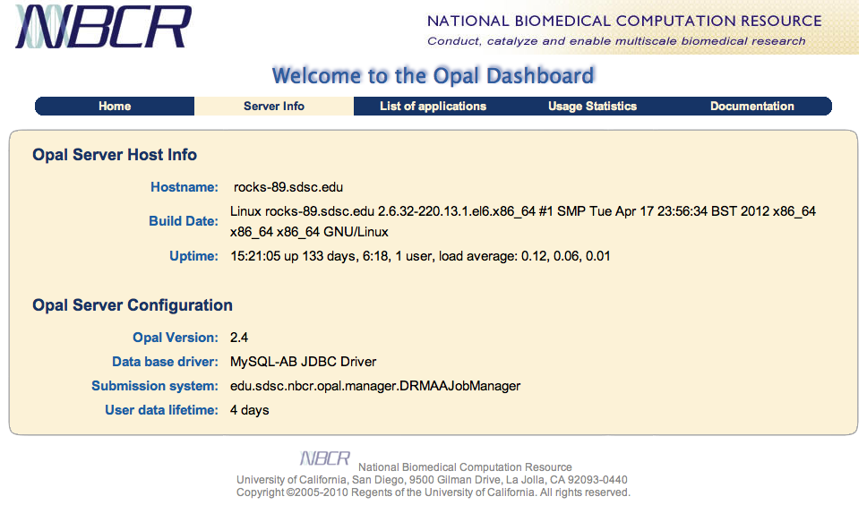
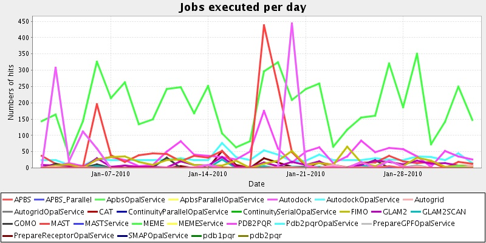

6.1. Overview
The Opal Dashboard is a Web-based graphical user interface that allows a user to monitor an Opal service, to view statistics regarding its usage and to execute deployed applications from within a standard Web browser. It provides for dynamic creation of customized applications forms for job submission. The dashboard is automatically deployed along with Opal, and it can be accessed at http://servername:8080/opal2/dashboard.
The Opal dashboard has the following tabs:
Home: provides general information about Opal, and an overview of the rest of the functionality of the Dashboard.
Server Info: provides general information about the Opal installation, such as server configuration, versions, etc.

Usage Statistics: provides charts with usage statistics, errors and average execution times. The charts are created dynamically based on user choice of timeframe and a list of services. If HSQL database is used, then all services that have ever been deployed will be displayed. For other databases the charts will include only services that are currently active (services that have been undeployed will not be displayed).
The following screenshot displays the number of jobs executed per day over a specified timeframe.

List of Applications: provides a list of all installed applications and an atom feed
 for the list of applications.
Users can search for applications based on specified metadata, and click on the
applications to access submission forms.
for the list of applications.
Users can search for applications based on specified metadata, and click on the
applications to access submission forms.
Documentation: provides links to Opal documentation, websites, tutorials, publications, etc.
The list of installed applications is generated dynamically by fetching real time data from the Apache Axis engine. When the user clicks on one of the available services, the Opal dashboard displays a submisison form. The submission form type depends on the configuration of the specific application: